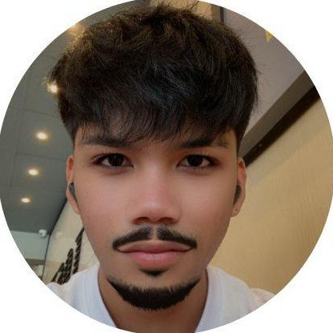

Lead Developer
Xavier Michael Emmanuel N. Ombrog
Computer Science student with a solid foundation in software development and technology. Motivated to learn, contribute to innovative projects, and gain hands-on experience in the tech industry.
Education
Far Eastern University – Alabang
Bachelor of Science in Computer Science with Specialization in Software Engineering
San Beda College Alabang
Humanities and Social Sciences
Technical skills
- Programming languages
- Basic knowledge of C++, Java, Python, JavaScript, Swift, Kotlin, NASM Assembly
- Database management
- Basic knowledge of SQL
- Software development tools
- Visual Studio Code, Android Studio, Xcode
- Operating systems
- Windows, macOS
Soft skills
- Analytical Thinking
- Problem Solving
- Team Collaboration
- Communication Skills
- Adaptability
- Eager to Learn
- Collaboration Tools Proficiency
- Attention to Detail
- Time Management
Certificates
Information Technology Specialist in Java
Information Technology Specialist in Python
Certificates available upon request.